There is a wide variety of sensors used in AMRAutonomous Mobile RoboticsAutonomous Mobile
Roboticss. Some are used to measure simple values like the
Here, we will focus primarily on sensors used to extract information about the robot’s environment.
Because a AMRAutonomous Mobile RoboticsAutonomous Mobile Robotics moves around, it will
frequently encounter
We classify sensors using two (
- Proprioceptive
-
Measure values internal to the robot.
i.e., motor speed, wheel load, robot arm joint angles, battery voltage. - Exteroceptive
-
Measure information from the
robot’s environment ;i.e., distance measurements, light intensity, sound amplitude.
exteroceptive sensor measurements are interpreted by the robot to extract meaningful environmental features.
And these sensors can also be categorised by how they interact with the environment
- Passive
-
Measure ambient environmental energy entering the sensor.
e.g., temperature probes, microphones and CCDCharge Coupled DeviceCharge Coupled Device or CMOS cameras. - Active
-
Emit energy into the environment, then measure the environmental reaction.
Because active sensors can manage more controlled interactions with the environment, they often achieve superior performance, but, active sensing introduces several risks:
In addition, an active sensor may suffer from interference between its signal and those beyond its control.
Examples of active sensors include wheel quadrature encoders, ultrasonic sensors and laser rangefinders.
The sensor classes presented in Table 2.1 are arranged in ascending order of complexity and descending order of technological maturity. Tactile and proprioceptive sensors are critical to virtually all AMRAutonomous Mobile RoboticsAutonomous Mobile Robotics, and are well understood and easily implemented.
Commercial quadrature encoders, for example, may be purchased as part of a gear-motor assembly used in a AMRAutonomous Mobile RoboticsAutonomous Mobile Robotics. At the other extreme, visual interpretation by means of one or more CCDCharge Coupled DeviceCharge Coupled Device/CMOSComplimentary MOSComplimentary MOS cameras provides a broad array of potential functionalities, from obstacle avoidance and localisation to human face recognition.
General Classification
Sensor System
PC / EC
P / A
Tactile Sensors (detection of physical contact or closeness; security switches)
Contact switches, bumpers
EC
P
Optical barriers,
EC
A
Non-contact proximity sensors
EC
A
Tactile Sensors
Brush Encoders
PC
P
Potentiometers
PC
P
Synchros, Resolvers,
PC
A
Optical Encoders,
PC
A
Magnetic Encoders,
PC
A
Inductive Encoders,
PC
A
Capacitive Encoders,
PC
A
Ground Based Sensors GPS EC A
Active optical or RF Beacons EC A
Active ultrasonic beacons
EC
A
Reflective beacons
EC
A
Active Ranging
Reflective Sensors
EC
A
Ultrasonic Sensor
EC
A
Laser rangefinder
EC
A
Optical triangulation
EC
A
Structured Light
EC
A
Motion and Speed Sensors
Doppler radar
EC
A
Doppler sound
EC
A
Vision-based Sensors
CCD/CMOS cameras
EC
P
The sensors we will look in this chapter can vary greatly in their performance characteristics.
Other sensors provide narrow, high precision data in a wide variety settings. To quantify such performance characteristics, first we formally define the sensor performance terminology that will be valuable throughout the rest of this chapter.
Basic Sensor Response Ratings
A number of sensor characteristics can be rated
- Dynamic Range
-
Measures the spread between the lower and upper limits of inputs values to the sensor while maintaining normal sensor operation. Formally, the dynamic range is the ratio of the maximum input value to the minimum measurable input value. Because this raw ratio can be unwieldy, it is usually measured in Decibels (), named after Alexander Graham Bell,
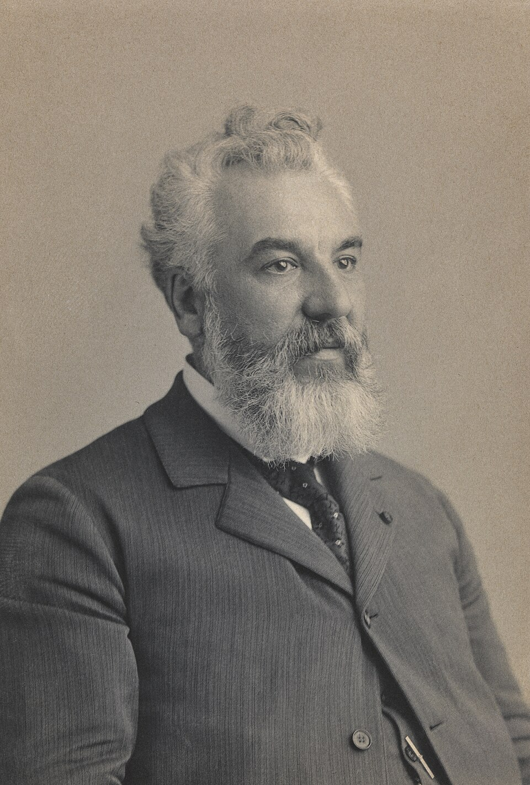
Alexander Graham Bell(1847 - 1922) was a Scottish-born Canadian-American inventor, scientist, and engineer who is credited with patenting the first practical telephone. He also co-founded the American Telephone and Telegraph Company (AT&T) in 1885. which is computed as ten (10 ) times the common logarithm of the dynamic range. However, there is potential confusion in the calculation of , which are meant to measure the ratio between powers, such as Watts () or Horsepower (). Let’s assume our sensor measures motor current and can register values from a minimum of to . The dynamic range of this current sensor is defined as:(2.1) Now suppose you have a voltage sensor that measures the voltage of your robot’s battery, measuring any value from 1 to 20 . Voltage is NOT a unit of power, but the square of voltage is proportional to power. Therefore, we use 20 instead of 10:
(2.2) - Range
-
An important rating in AMRAutonomous Mobile RoboticsAutonomous Mobile Robotics because often robot sensors operate in environments where they are frequently exposed to input values beyond their working range. In such cases, it is critical to understand how the sensor will respond.
For example, an optical rangefinder will have a minimum operating range and can therefore provide spurious data when measurements are taken with object closer than that minimum. - Resolution
-
The minimum difference between two (
2 ) values which can be detected by a sensor. Usually, the lower limit of the dynamic range of a sensor is equal to its resolution. However, in the case of digital sensors, this is NOT necessarily so.For example, suppose we have a sensor which measures voltage, performs an analogue-to-digital conversion and outputs the converted value as an 8-bit number linearly corresponding from to . If this sensor is truly linear, then it has total output values or a resolution of: - Linearity
-
A important measure governing the behaviour of the sensor’s output signal as the input signal varies. A linear response indicates that, for example, if two (
2 ) inputs, say and result in the two (2 ) outputs and , then for any values and , the following relation can be derived:(2.3) This means that a plot of the sensor’s input/output response is simply a straight line.
- Bandwidth or Frequency
-
is used to measure the speed with which a sensor can provide a stream of readings. Formally, the number of measurements per second is defined as the sensor’s frequency in . Because of the dynamics of moving through their environment, mobile robots often are limited in maximum speed by the bandwidth of their obstacle detection sensors. Thus increasing the bandwidth of ranging and vision-based sensors has been a high-priority goal in the robotics community.
In Situ Sensor Performance
The above sensor characteristics can be reasonably measured in a laboratory environment, with confident extrapolation to performance in real-world deployment. However, a number of important measures cannot be reliably acquired without deep understanding of the complex interaction between all environmental characteristics and the sensors in question.
This is most relevant to the most sophisticated sensors, including active ranging sensors and visual interpretation sensors.
- Sensitivity
-
A measure of the degree to which an incremental change in the target input signal changes the output signal.
Formally, sensitivity is the ratio of output change to input change. Unfortunately, however, the sensitivity of exteroceptive sensors is often confounded by undesirable sensitivity and performance coupling to other environmental parameters.
- Cross-Sensitivity
-
is the technical term for sensitivity to environmental parameters which are
orthogonal to the target parameters for the sensor. For example, a flux-gate compass can demonstrate high sensitivity to magnetic north and is therefore of use for AMRAutonomous Mobile RoboticsAutonomous Mobile Robotics navigation. However, the compass will also demonstrate high sensitivity to ferrous building materials, so much so that its cross-sensitivity often makes the sensor useless in some indoor environments.High cross-sensitivity of a sensor is generally undesirable, especially so when it cannot be modeled.
- Error
-
of a sensor is defined as the difference between the sensor’s output measurements and the true values being measured, within some specific operating context.
As an example, given a true value and a measured value , we can define error as:
- Accuracy
-
The degree of conformity between the sensor’s measurement and the true value, and is often expressed as a proportion of the true value (e.g. 97.5% accuracy):
Of course, obtaining the ground truth (), can be difficult or impossible, and so establishing a confident characterisation of sensor accuracy can be problematic. Further, it is important to distinguish between two different sources of error:
- Systematic errors
-
caused by factors or processes that can in theory be modelled. These errors are, therefore, deterministic. (...) Meaning, it’s value is not determined by a random process and therefore should, in theory, be predictable.
Poor calibration of a laser rangefinder, un-modelled slope of a hallway floor and a bent stereo camera head due to an earlier collision are all possible causes of systematic sensor errors - Random errors
-
cannot be predicted using a sophisticated model nor can they be mitigated with more precise sensor machinery. These errors can only be described in probabilistic terms. (...) i.e. stochastic. Hue instability in a colour camera, spurious range-finding errors and black level noise in a camera are all examples of random errors.
- Precision
-
is often confused with accuracy, and now we have the tools to clearly distinguish these two (
2 ) terms. Intuitively, high precision relates to reproducibility of the sensor results.For example, one sensor taking multiple readings of the same environmental state has high precision if it produces the same output. In another example, multiple copies of this sensors taking readings of the same environmental state have high precision if their outputs agree.Precision does not, however, have any bearing on the accuracy of the sensor’s output with respect to the true value being measured. Suppose that the random error of a sensor is characterised by some mean value () and a standard deviation (). The formal definition of precision is the ratio of the sensor’s output range to the standard deviation:
Only and NOT has impact on precision. In contrast mean error is directly proportional to overall sensor error and inversely proportional to sensor accuracy.
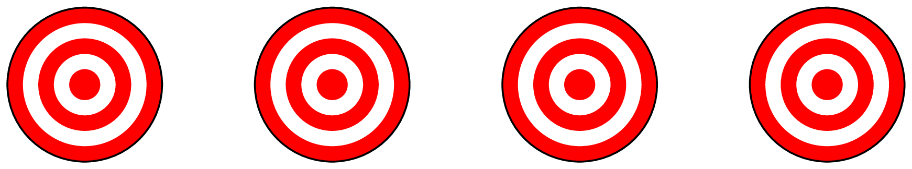
Characterising Error
AMRAutonomous Mobile RoboticsAutonomous Mobile Roboticss depend heavily on Of course,
these “objects” surrounding the robot are all detected from the viewpoint of its local reference frame. (...)
In
this case we are referring to the robot reference frame. Since the systems we study are
Blurring of Systematical and Random Errors Active ranging sensors tend to have failure modes which are triggered largely by specific relative positions of the sensor and environment targets.
During motion of the robot, such relative angles occur at stochastic intervals. This is especially true in
a AMRAutonomous Mobile RoboticsAutonomous Mobile Robotics outfitted with a ring of multiple
sonars. The chances of one sonar entering this error mode during robot motion is high. From the
perspective of the moving robot, the sonar measurement error is a
Once the robot is motionless, the error appears to be systematic and high precision.
The fundamental mechanism at work here is the cross-sensitivity of AMRAutonomous Mobile RoboticsAutonomous Mobile Robotics sensors to robot pose and robot-environment dynamics.
The models for such cross-sensitivity are NOT, in an underlying sense, truly random. However, these physical interrelationships are rarely modelled and therefore, from the point of view of an incomplete model, the errors appear random during motion and systematic when the robot is at rest. Sonar is NOT the only sensor subject to this blurring of systematic and random error modality. Visual interpretation through the use of a CCDCharge Coupled DeviceCharge Coupled Device camera is also highly susceptible to robot motion and position because of camera dependency on lighting. (...) such as glare and reflections.
The important point is to realise that, while systematic error and random error are well-defined in a controlled setting, the AMRAutonomous Mobile RoboticsAutonomous Mobile Robotics can exhibit error characteristics which bridge the gap between deterministic and stochastic error mechanisms.
Multi-Modal Error Distributions
It is common to characterise the behaviour of a sensor’s random error in terms of a
Although we discuss the mathematics
of this in detail later, it is important for now to recognise the fact that one frequently assumes
symmetry as well as unimodal distribution. This means that measuring the correct value is most
probable, and any measurement that is further away from the correct value is less likely than any
measurement that is closer to the correct value. These are strong assumptions which enable powerful
mathematical principles to be applied to AMRAutonomous Mobile RoboticsAutonomous Mobile
Robotics problems, but it is important to realise how wrong these assumptions usually
are.
Let’s consider, for example, the sonar sensor once again. When ranging an object that reflects the
sound signal well, the sonar will exhibit high accuracy, and will induce random error based on noise, for
example, in the timing circuitry. This portion of its sensor behaviour will exhibit error characteristics
that are fairly
Sensors in a AMRAutonomous Mobile RoboticsAutonomous Mobile Robotics may be subject to multiple modes of operation and, when the sensor error is characterised, uni modality and symmetry may be grossly violated. Nonetheless, as we will see, many successful AMRAutonomous Mobile RoboticsAutonomous Mobile Robotics systems make use of these simplifying assumptions and the resulting mathematical techniques with great empirical success.
Till now, we have presented a terminology with which we can characterise the advantages and disadvantages of various AMRAutonomous Mobile RoboticsAutonomous Mobile Robotics sensors. In the following sections, we do the same for a sampling of the most commonly used AMRAutonomous Mobile RoboticsAutonomous Mobile Robotics sensors today.
Wheel/motor sensors are devices use to measure the
Optical Encoders
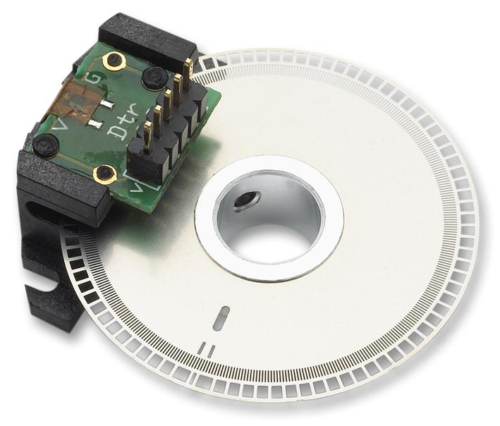
Optical incremental encoders have become the most popular device for measuring
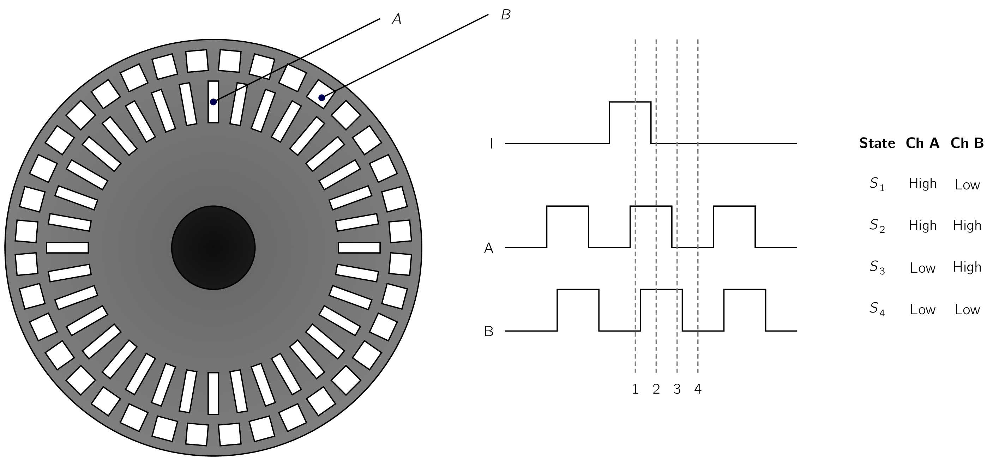
A typical encoder in AMRAutonomous Mobile RoboticsAutonomous Mobile Robotics may have 2,000 CPR while the optical encoder industry can readily manufacture encoders with 10,000 CPR. In terms of required bandwidth, it is of course critical that the encoder be sufficiently fast to count at the shaft spin speeds that are expected. Industrial optical encoders present no bandwidth limitation to AMRAutonomous Mobile RoboticsAutonomous Mobile Robotics applications. Usually in AMRAutonomous Mobile RoboticsAutonomous Mobile Robotics the quadrature encoder is used. In this case, a second illumination and detector pair is placed shifted with respect to the original in terms of the rotor disc. The resulting twin square waves, shown in Fig. 2.3, provide significantly more information. The ordering of which square wave produces a rising edge first identifies the direction of rotation.
Furthermore, the four detectability different states improve the resolution by a factor of four with no change to the rotor disc. Therefore, a 2,000 CPR encoder in quadrature gives 8,000 counts. Further improvement is possible by retaining the sinusoidal wave measured by the optical detectors and performing sophisticated interpolation.
Such methods, although rare in AMRAutonomous Mobile RoboticsAutonomous Mobile Robotics, can provide 1000-fold improvements in resolution.
As with most proprioceptive sensors, encoders are generally in the controlled environment of a AMRAutonomous Mobile RoboticsAutonomous Mobile Robotics’s internal structure, and so systematic error and cross-sensitivity can be engineered away. The accuracy of optical encoders is often assumed to be 100% and, although this may NOT entirely correct, any errors at the level of an optical encoder are dwarfed by errors downstream of the motor shaft.
Heading sensors can be
They allow us, together with appropriate velocity information, to integrate the movement to a position estimate. This procedure, which has its roots in vessel and ship navigation, is called dead reckoning.
In navigation, dead reckoning is the process of calculating the current position of a moving object by using a previously determined position, or fix, and incorporating estimates of speed, heading (or direction or course), and elapsed time.
Compasses
The two (
Hall Effect Sensors
The Hall Effect describes the behaviour of electric potential in a semiconductor under the presence of a
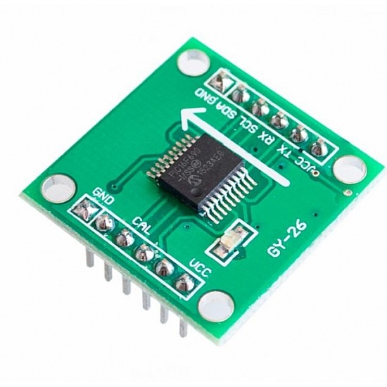
In addition, the sign of the voltage potential identifies the direction of the magnetic field. Therefore, a single semiconductor provides a measurement of flux and direction along one dimension.
Hall Effect digital compasses are popular in AMRAutonomous Mobile RoboticsAutonomous Mobile
Robotics, and contain two (
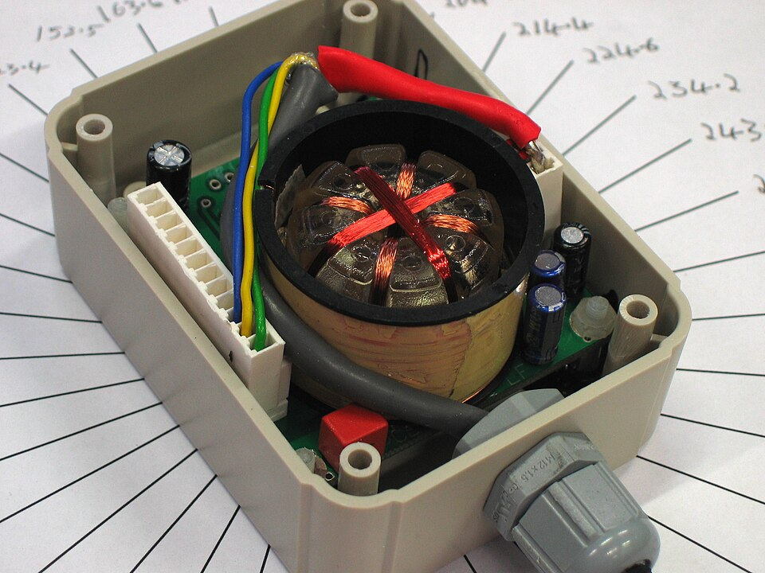
The Flux Gate compass operates on a fundamentally different principle. Three small coils are wound on ferrite cores, which is a highly permeable magnetic material. They are arranged as evenly spaced spokes, to directly sense the direction of the horizontal component of the Earths magnetic field.
One coil is driven by an ACAlternating CurrentAn electric current that periodically
reverses direction and changes its magnitude continuously with time, in contrast
to direct current (DC), which flows only in one direction. waveform, (...)
typically,
but can be higher. and the other two (
Regardless of the type of compass used, a major drawback concerning the use of the Earth’s magnetic field for AMRAutonomous Mobile RoboticsAutonomous Mobile Robotics applications involves disturbance of that magnetic field by other magnetic objects and man-made structures, as well as the bandwidth limitations of electronic compasses and their susceptibility to vibration. Particularly in indoor environments AMRAutonomous Mobile RoboticsAutonomous Mobile Robotics applications have often avoided the use of compasses, although a compass can conceivably provide useful local orientation information indoors, even in the precense of steel structures.
Gyroscope
Gyroscopes are 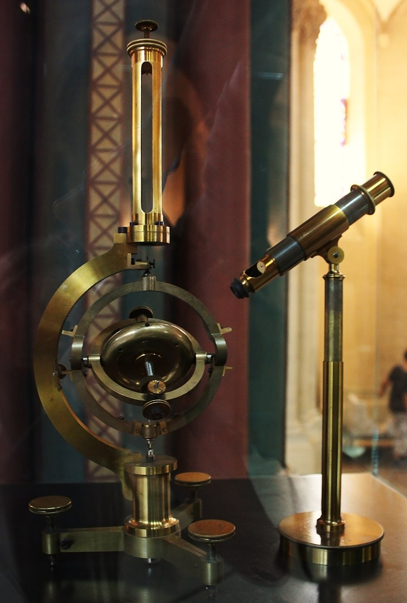
Generally, gyroscopes can be classified in two (
-
mechanical gyroscopes, and
-
optical gyroscopes.
Mechanical Gyroscopes
The concept of a mechanical gyroscope relies on the inertial properties of a fast spinning rotor. The
property of interest is known as the
This is caused by the
|
| (2.4) |
By arranging a spinning wheel, 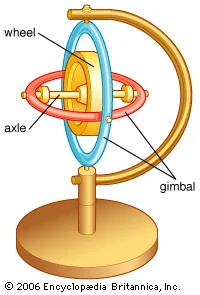
A high quality mechanical gyroscope can cost up to $100,000 and has an angular drift of about in 6 hours.
For navigation, the spinning axis has to be initially selected. If the spinning axis is aligned with the north-south meridian, the earth’s rotation has no effect on the gyro’s horizontal axis.
If it points east-west, the horizontal axis reads the earth rotation.
A rate gyro is a type of gyroscope (also called
Optical Gyroscopes
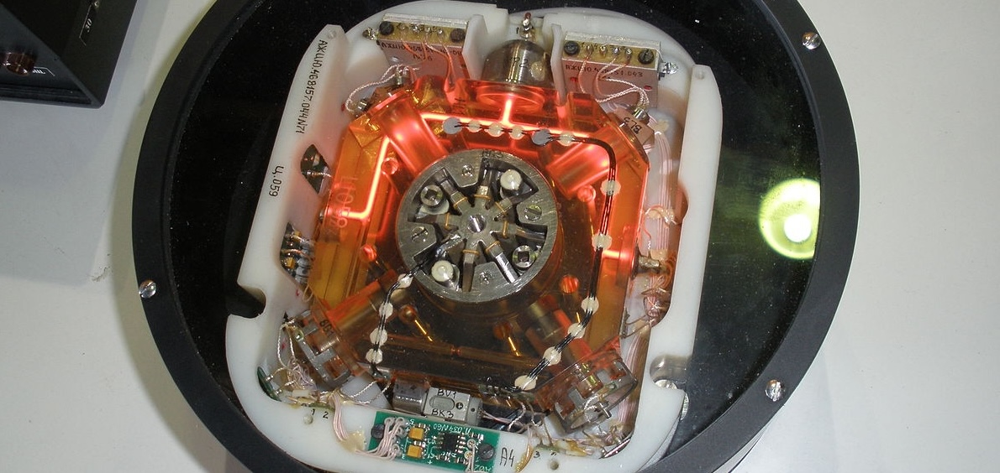
Optical gyroscopes are a relatively new innovation. Commercial use began in the early 1980’s when
they were first installed in aircraft. Optical gyroscopes are angular speed sensors that use two
(
A phenomenon encountered in interferometry elicited by rotation. The Sagnac effect manifests itself in a setup called a ring interferometer or Sagnac interferometer. A beam of light is split and the two beams are made to follow the same path but in opposite directions.
On return to the point of entry the two light beams are allowed to exit the ring and undergo interference. The relative phases of the two exiting beams, and therefore the position of the interference fringes, are shifted according to the angular velocity of the apparatus. In other words, when the interferometer is at rest with respect to a nonrotating frame, the light takes the same amount of time to traverse the ring in either direction.
However, when the interferometer system is spun, one beam of light has a longer path to travel than
the other in order to complete one circuit of the mechanical frame, and so takes longer, resulting in a
phase difference between the two beams.
New solid-state optical gyroscopes based on the same principle are build using microfabrication technology, thereby providing heading information with resolution and bandwidth far beyond the needs of mobile robotic applications. Bandwidth, for instance, can easily exceed 100KHz while resolution can be smaller than 0.0001ř/hr.
A simple approach to solving the localization problem in AMRAutonomous Mobile
RoboticsAutonomous Mobile Robotics is to use either
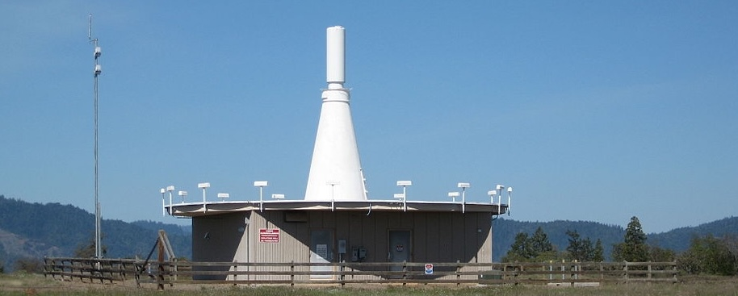
The expense of environmental modification in an indoor setting is NOT amortized over an extremely large useful area, as it is for example in the case of GPSGlobal Positioning SystemGlobal Positioning System. Furthermore, indoor environments offer significant challenges which are NOT experienced in outdoors settings, including multipath and environment dynamics.
Confounding this, humans and other obstacles may be constantly changing the environment.
In commercial applications such as manufacturing plants, the environment can be carefully controlled to ensure success. In less structured indoor settings, beacons have nonetheless been used, and the problems are mitigated by careful beacon placement and the useful of passive sensing modalities.
Global Positioning System
The GPSGlobal Positioning SystemGlobal Positioning System was initially developed for military use
but is now freely available for civilian navigation [†]Speakes, L. M. Statement by Deputy Press
Secretary Speakes on the Soviet Attack on a Korean Civilian Airliner. Ronald Reagan Presidential
Library, September 16 (1983). There are at least 24 operational GPSGlobal Positioning SystemGlobal
Positioning System satellites at all times. The satellites orbit every 12 hours at a height of 20,190
.
There are four ( 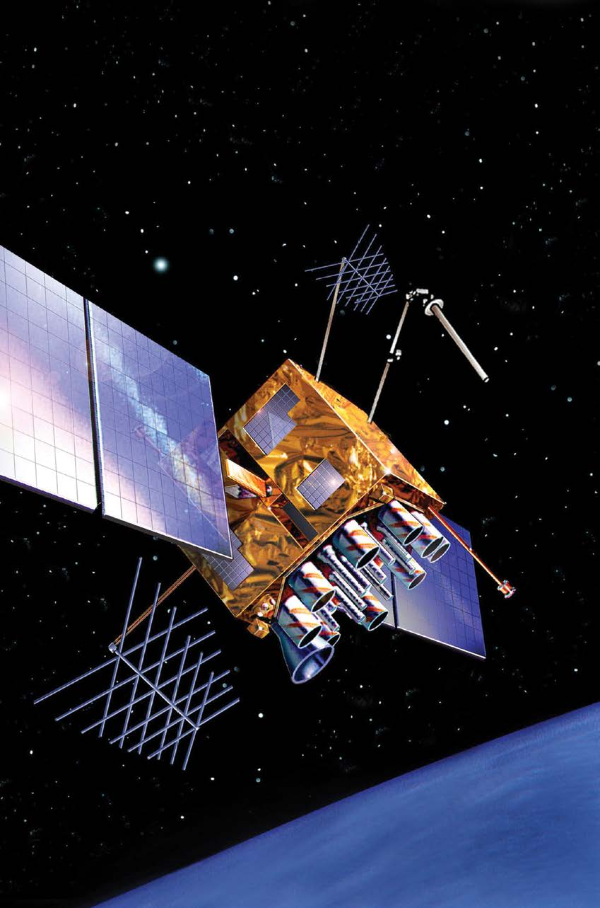
Each satellite continuously transmits data which indicates its location and the current time. Therefore,
GPSGlobal Positioning SystemGlobal Positioning System receivers are
In theory, such triangulation requires only three (
It is, of course, mandatory the satellites to be well synchronised. To this end, they are updated by
ground stations regularly and each satellite carries on-board atomic clocks 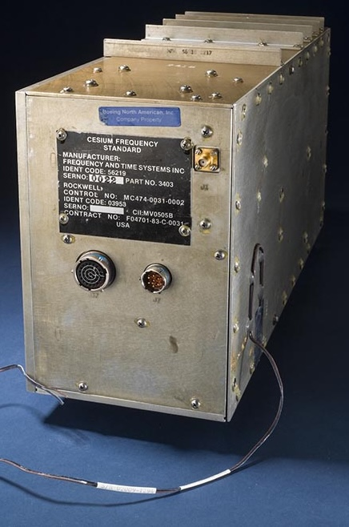
The fact that the GPS receiver must read the transmission of four (
Line-of-sight propagation is a characteristic of electromagnetic radiation or acoustic wave propagation which means waves can only travel in a direct visual path from the source to the receiver without obstacles.
Electromagnetic transmission includes light emissions traveling in a straight line. The rays or waves
may be
Therefore, in confined spaces such as city blocks with tall buildings or dense forests, one is unlikely to
receive the minimum four (
For these reasons, GPSGlobal Positioning SystemGlobal Positioning System has been a popular sensor in AMRAutonomous Mobile RoboticsAutonomous Mobile Robotics, but has been relegated to projects involving AMRAutonomous Mobile RoboticsAutonomous Mobile Robotics traversal of wide-open spaces and autonomous flying machines.
A number of factors affect the performance of a localization sensor that makes use of GPSGlobal Positioning SystemGlobal Positioning System:
- i.
- It is important to understand that, because of the specific orbital paths of the GPS satellites, coverage is not geometrically identical in different portions of the Earth and therefore resolution is not uniform. Specifically, at the North and South poles, the satellites are very close to the horizon and, thus, while resolution in the latitude and longitude directions is good, resolution of altitude is relatively poor as compared to more equatorial locations.
- ii.
- The second point is that GPS satellites are just
information sources . They can be employed with numerous strategies to achieve dramatically different levels of localisation resolution. The basic strategy for GPS use, calledpseudorange and described above, generally performs at a resolution of . An extension of this method is differential GPS, which makes use of a second receiver which is static and at a known exact position. A number of errors can be corrected using this reference, and so resolution improves to the order of 1m or less. A disadvantage of this technique is that the stationary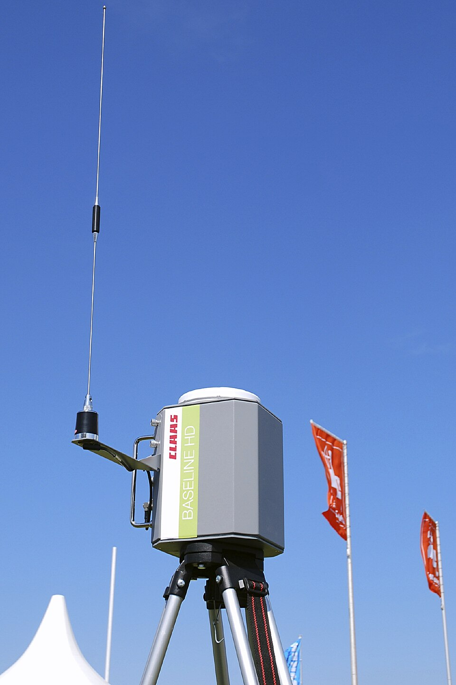
An example of a transportable DGPS reference station Baseline HD by CLAAS for use in satellite-assisted steering systems in modern agriculture. receiver must be installed, its location must be measured very carefully and of course the moving robot must be within kilometers of this static unit in order to benefit from the DGPS technique.
A further improved strategy is to take into account the
On a fast-moving AMRAutonomous Mobile RoboticsAutonomous Mobile Robotics or flying robot, this can mean that local motion integration will be required for proper control due to GPSGlobal Positioning SystemGlobal Positioning System latency limitations.
Active range sensors continue to be one of, if NOT, the most popular sensors used in AMRAutonomous Mobile RoboticsAutonomous Mobile Robotics. Many ranging sensors have a low price point, and most importantly all ranging sensors provide easily interpreted outputs:
For obstacle detection and avoidance, most AMRAutonomous Mobile RoboticsAutonomous Mobile Robotics heavily rely on active ranging sensors. But the local free-space information provided by range sensors can also be accumulated into representations beyond the robot’s current local reference frame.
Therefore, active range sensors are also commonly found as part of the localisation and environmental modeling processes of AMRAutonomous Mobile RoboticsAutonomous Mobile Roboticss.
It is only with the slow advent of successful visual interpretation competency we can expect the class of active ranging sensors to gradually lose their primacy as the sensor class of choice among AMRAutonomous Mobile RoboticsAutonomous Mobile Robotics engineers. However, due to their competitive pricing relative to other sensors and their ease of implementation, they will still play a vital role in industrial applications of AMRAutonomous Mobile RoboticsAutonomous Mobile Robotics.
Below, we present two (
-
the ultrasonic sensor,
-
the laser rangefinder.
Continuing onwards, we then present two (
-
the optical triangulation sensor,
-
the structured light sensor.
Time-of-FLight Active Ranging
ToFTime-of-FlightTime-of-Flight ranging makes use of the|
| (2.5) |
where is the distance travelled usually round-trip (), the speed of wave propagation (), and is the time it takes to travel ().
It is important to point out the propagation speed of sound is approximately 0.3 whereas the speed of an electromagnetic signal is 0.3 , which is faster. The ToFTime-of-FlightTime-of-Flight for a typical distance, say , is 10 ms for an ultrasonic system but only 10 ns for a laser rangefinder. It is therefore obvious that measuring the time of flight with electromagnetic signals is more technologically challenging. (...) This explains why laser range sensors have only recently become affordable and robust for use on AMRAutonomous Mobile RoboticsAutonomous Mobile Robotics.
The quality of ToFTime-of-FlightTime-of-Flight range sensors depends primarily on the following criteria:
-
Uncertainties in determining the exact time of arrival of the reflected signal,
-
Inaccuracies in the time of flight measurement, particularly with laser range sensors,
-
The dispersal cone of the transmitted beam mainly with ultrasonic range sensors
-
Interaction with the target (...) e.g., surface absorption, specular reflections.
-
Variation of propagation speed, and
-
The speed of the AMRAutonomous Mobile RoboticsAutonomous Mobile Robotics and target (in the case of a dynamic target).
As discussed below, each type of ToFTime-of-FlightTime-of-Flight sensor is sensitive to a particular subset of the above list of factors.
The main ethos of an ultrasonic (...)
Ultrasound is sound with frequencies greater than
.
sensor is to transmit a packet of ultrasonic pressure waves and to
The speed of sound in air is given by the following relation:
where is the ratio of specific heat, is the gas constant (), and is the temperature in Kelvin (). In air, at standard pressure, and 20 the speed of sound is approximately:
We can see the different signal output and input of an ultrasonic sensor in Fig. 2.8.
First, a series of sound pulses are emitted, which creates the wave packet. An integrator also begins to
This threshold is often decreasing in time, because the amplitude of the expected echo decreases over time based on dispersal as it travels longer.
But during transmission of the initial sound pulses and just afterwards, the threshold is set very high to suppress triggering the echo detector with the outgoing sound pulses. A transducer will continue to ring for up to several after the initial transmission, and this governs the blanking time of the sensor.
If, during the blanking time, the transmitted sound were to reflect off of an extremely close object and return to the ultrasonic sensor, it may fail to be detected.
However, once the blanking interval has passed, the system will detect any above-threshold reflected sound, triggering a digital signal and producing the distance measurement using the integrator value.
The ultrasonic wave typically has a frequency between
to
and is usually generated by a piezo or electrostatic transducer. 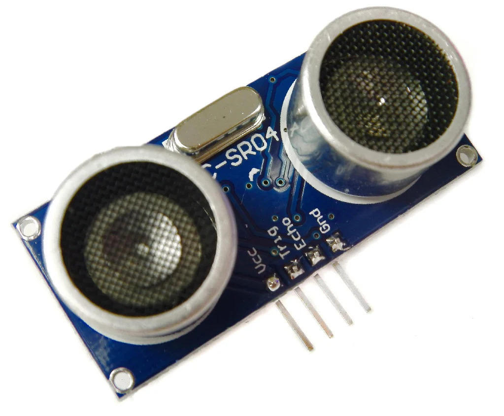
Most ultrasonic sensors used by AMRAutonomous Mobile RoboticsAutonomous Mobile Roboticss have an effective range of roughly 12 to . The published accuracy of commercial ultrasonic sensors varies between 98% and 99.1%. In AMRAutonomous Mobile RoboticsAutonomous Mobile Robotics applications, specific implementations generally achieve a resolution of approximately .
In most cases one may want a narrow opening angle for the sound beam to also obtain precise directional information about objects that are encountered. This is a major limitation since sound propagates in a cone-like manner with opening angles around and . Consequently, when using ultrasonic ranging one does not acquire depth data points but, rather, entire regions of constant depth. This means that the sensor tells us only that there is an object at a certain distance in within the area of the measurement cone. The sensor readings must be plotted as segments of an arc (sphere for 3D) and not as point measurements.
However, recent research developments show significant improvement of the measurement quality in
using sophisticated echo processing. Ultrasonic sensors suffer from several additional drawbacks, namely
in the areas of
Of course the acoustic properties of the material being ranged have direct impact on the sensor’s performance. Again, the impact is discrete, with one material possibly failing to produce a reflection that is sufficiently strong to be sensed by the unit.
A final limitation for ultrasonic ranging relates to bandwidth. Particularly in moderately open spaces, a single ultrasonic sensor has a relatively slow cycle time.
For a robot conducting moderate speed motion while avoiding obstacles using ultrasonic sensor, this update rate can have a measurable impact on the maximum speed possible while still sensing and avoiding obstacles safely.
Ultrasonic measurements may be limited through barrier layers with large salinity, temperature or vortex differentials.
Laser Rangefinder
The laser rangefinder is a type of ToFTime-of-FlightTime-of-Flight sensor which achieves significant
improvements over the ultrasonic range sensor due to the
- i.
- A way to measure the ToFTime-of-FlightTime-of-Flight for the light beam is to use a pulsed laser and then measured the elapsed time directly, just as in the ultrasonic solution described in just a little bit. Electronics capable of resolving are required in such devices and they are therefore very expensive.
- ii.
- A second method is to measure the beat frequency between a frequency modulated continuous wave and its received reflection. Another, even easier method is to measure the phase shift of the reflected light.
Continuous Wave Radar It is a type of radar system where a known stable frequency continuous wave radio energy is transmitted and then received from any reflecting objects. Individual objects can be detected using the Doppler effect, which causes the received signal to have a different frequency from the transmitted signal, allowing it to be detected by filtering out the transmitted frequency.
Doppler-analysis of radar returns can allow the filtering out of slow or non-moving objects, thus offering immunity to interference from large stationary objects and slow-moving clutter. This makes it particularly useful for looking for objects against a background reflector, for instance, allowing a high-flying aircraft to look for aircraft flying at low altitudes against the background of the surface. Because the very strong reflection off the surface can be filtered out, the much smaller reflection from a target can still be seen.
Phase Shift Measurement A near infrared light, which could be from an LEDLight-Emitting DiodeLight-Emitting Diode or a laser, is collimated and transmitted from the transmitter in Fig. ?? and hits a point in the environment.
For surfaces having a roughness greater than the wavelength of the incident light, diffuse reflection will occur, meaning that the light is reflected almost isotropically (...) Something that is isotropic has the same size or physical properties when it is measured in different directions. The wavelength of the infrared light emitted is and so most surfaces with the exception of only highly polished reflecting objects, will be diffuse reflectors. The component of the infrared light which falls within the receiving aperture of the sensor will return almost parallel to the transmitted beam, for distant objects. The sensor transmits 100% amplitude modulated light at a known frequency and measures the phase shift between the transmitted and reflected signals.
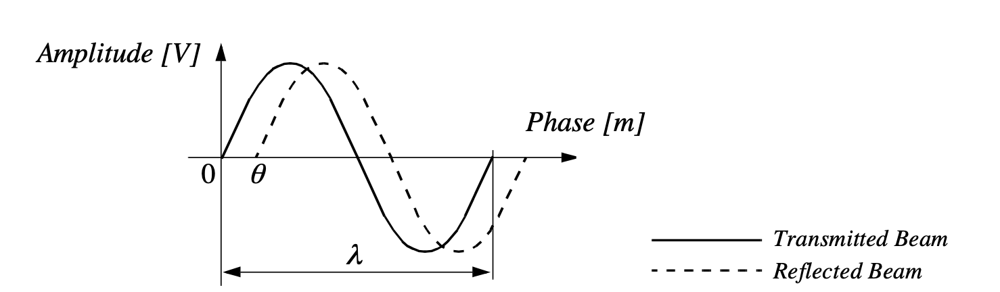
Fig. 2.11 shows how this technique can be used to measure range. The wavelength of the modulating signal obeys the equation where is the speed of light and the modulating frequency.
The total distance covered by the emitted light is:
where and are the distances defined in Fig. ??. The required distance , between the beam splitter and the target, is therefore given by:
where
is the electronically measured phase difference between the transmitted and reflected light beams, and
the
known
We therefore define an
Unlike ultrasonic sensors, laser rangefinders cannot detect the presence of optically transparent materials such as glass, and this can be a significant obstacle in environments, for example museums, where glass is commonly used.
Triangulation-based Active Ranging
Triangulation-based ranging sensors use
Optical Triangulation (1D Sensor)
The principle of optical triangulation in 1D is straightforward, as depicted in Fig. 2.12.
A collimated beam is transmitted toward the target. The reflected light is collected by a lens and
projected onto a position sensitive device 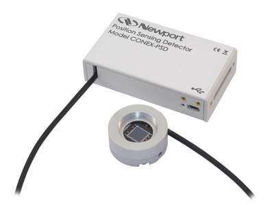
The distance is proportional to ,
therefore the sensor resolution is best for close objects and becomes worse as
distance increases. Sensors based on this principle are used in range sensing up to
to
,
but also in high precision industrial measurements with resolutions far below
.
Optical triangulation devices can provide relatively high accuracy with very good resolution for close
objects. However, the operating range of such a device is normally fairly limited by
It is inexpensive compared to ultrasonic and laser rangefinder sensors.
Although more limited in range than sonar, the optical triangulation sensor has high bandwidth and does not suffer from cross-sensitivities that are more common in the sound domain.
Structured Light (2D Sensor)
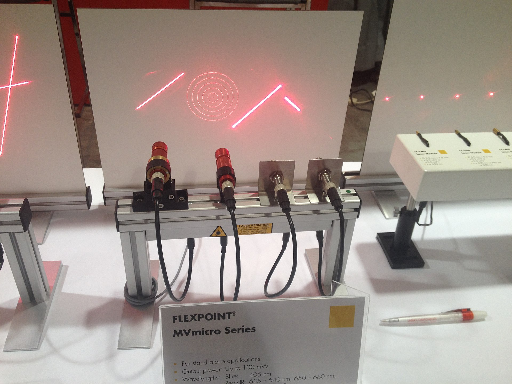
If one replaced the linear camera or PSDPosition Sensing DevicePosition Sensing Device of an optical triangulation sensor with a two-dimensional receiver such as a CCDCharge Coupled DeviceCharge Coupled Device or CMOSComplimentary MOSComplimentary MOS camera, then one can recover distance to a large set of points instead of to only one point. The emitter must project a known pattern, or structured light, onto the environment. Many systems exist which either project light textures, which can be seen in Fig. 2.14, or emit collimated light by means of a rotating mirror.
Another popular alternative is to project a laser stripe by turning a laser beam into a plane using a prism. Regardless of how it is created, the projected light has a known structure, and therefore the image taken by the CCDCharge Coupled DeviceCharge Coupled Device or CMOSComplimentary MOSComplimentary MOS receiver can be filtered to identify the pattern’s reflection.
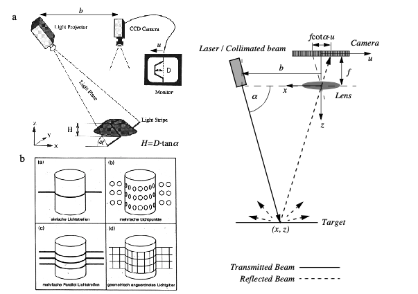
The problem of recovering depth here far simpler than the problem of passive image analysis.
In passive image analysis, as we discuss later, existing features in the environment must be used to
perform correlation, while the present method projects a
| (2.6) |
where is the distance of the lens to the imaging plane. In the limit, the ratio of image resolution to range resolution is defined as the triangulation gain and from Eq. (2.6) is given by:
This shows that the ranging accuracy, for a given image resolution, is proportional to source/ detector separation and focal length , and decreases with the square of the range . In a scanning ranging system, there is an additional effect on the ranging accuracy, caused by the measurement of the projection angle . From Eq. (2.6) we see that:
We can summarise the effects of the parameters on the sensor accuracy as follows:
- Baseline Length (b)
-
the smaller is the more compact the sensor can be.The larger is the better the range resolution will be. Note also that although these sensors do not suffer from the correspondence problem, the disparity problem still occurs. As the baseline length b is increased, one introduces the chance that, for close objects, the illuminated point(s) may not be in the receiver’s field of view.
- Detector length and focal length f
-
A larger detector length can provide either a larger field of view or an improved range resolution or partial benefits for both. Increasing the detector length however means a larger sensor head and worse electrical characteristics (increase in random error and reduction of bandwidth). Also, a short focal length gives a large field of view at the expense of accuracy and vice versa.
At one time, laser stripe-based structured light sensors were common on several mobile robot bases as an inexpensive alternative to laser range-finding devices. However, with the in- creasing quality of laser range-finding sensors in the 1990’s the structured light system has become relegated largely to vision research rather than applied mobile robotics.
Some sensors measure directly the relative motion between the robot and its environment. Since such
motion sensors detect
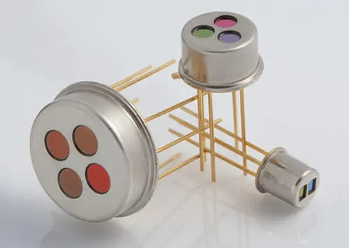
An example of a pyroelectric sensor, which measures infrared (IR) light radiating from objects in its field of view. sensor detects change in heat.
When someone walks across the sensor’s field of view, his motion triggers a change in heat in the
sensor’s reference frame. In the next subsection, we describe an important type of motion detector
based on the
For fast-moving AMRAutonomous Mobile RoboticsAutonomous Mobile Roboticss such as autonomous highway vehicles and unmanned flying vehicles, Doppler-based motion detectors are the obstacle detection sensor of choice.
Doppler Effect
Anyone who has noticed the change in siren pitch when an ambulance approaches and then passes by is familiar with the Doppler effect. (...) For anyone who needs a bit more information, it is the change in the frequency of a wave in relation to an observer who is moving relative to the source of the wave. The Doppler effect is named after the physicist Christian Doppler, who described the phenomenon in 1842. A common example of Doppler shift is the change of pitch heard when a vehicle sounding a horn approaches and recedes from an observer. Compared to the emitted frequency, the received frequency is higher during the approach, identical at the instant of passing by, and lower during the recession.
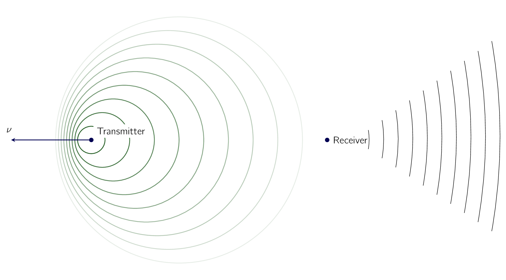
A transmitter emits an electromagnetic or sound wave with a frequency f t. It is either received by a receiver Fig. 2.15(a) or reflected from an object Fig. 2.15 (b). The measured frequency at the receiver is a function of the relative speed between transmitter and receiver according to
if the transmitter is moving and
if the receiver is moving. In the case of a reflected wave Fig. 2.15 (b) there is a factor of two introduced, since any change x in relative separation affects the round-trip path length by 2.
In such situations it is generally more convenient to consider the change in frequency , known as the Doppler shift, as opposed to the Doppler frequency notation above.
A current application area is both autonomous and manned highway vehicles. Both micro wave and laser radar systems have been designed for this environment. Both systems have equivalent range, but laser can suffer when visual signals are deteriorated by environmental conditions such as rain, fog, etc. Commercial microwave radar systems are already avail- able for installation on highway trucks. These systems are called VORAD (vehicle on-board radar) and have a total range of approximately 150m. With an accuracy of approximately 97%, these systems report range rate from 0 to 160 km/hr with a resolution of 1 km/ hr. The beam is approximately 4ř wide and 5ř in elevation. One of the key limitations of radar technology is its bandwidth. Existing systems can provide information on multiple targets at approximately 2 Hz.